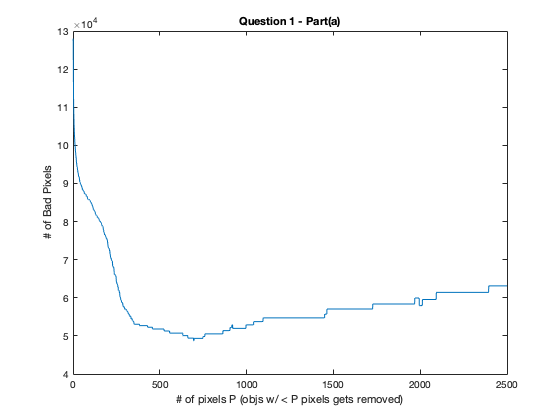

ECE 253, Homework 1
Shivani Bhakta
Contents
Problem 1 Cleaning by cluster removal
clc; clear; % Load binary images (Data) load('badImFile.mat', 'badIm'); load('idealImFile.mat', 'idealIm');
Part(a)
x = 1:2500; y = zeros(1,2500); for P = 1:2500 cleanP = 1 - bwareaopen(1-badIm,P); y(:,P) = sum(sum(xor(idealIm,cleanP))); end figure() plot(x,y) title('Question 1 - Part(a)') xlabel('# of pixels P (objs w/ < P pixels gets removed)') ylabel('# of Bad Pixels')
Part(b)
The plot above shows that the number of bad pixels decreases at first as the P increases, this is understandable because all the objects with fewer than P pixels are getting removed. This means all the small to medium objects (aka the random noise) in the image is being removed and image is becoming closer to the ideal image. However, after some P values between 500-1k, the badpixels numbers starts to increase again. This is mainly because now the larger portions aka the chapter number/title and even parts of the large black lines are also being removed, as the P value increases. It is not monotonic because the image is very noisy and some objects are pixels are not clearly separable, specially the background images in the title of the chapter.
Part(c)
[minP, miny] = min(y); %695, 48730 fprintf('The minimum value of the curve is %i.\n', minP); fprintf('This minimum occurs at the x value of %i.\n', miny); clean695 = 1 - bwareaopen(1-badIm,695); figure() imshow(clean695) % saveas(figure(2), 'clean695_part1c.jpg') title("Question 1 - Part(c), image w/ minimum badPixels at P = 695")
The minimum value of the curve is 48730. This minimum occurs at the x value of 695.
Problem 2 Erosion and Dilation
Part(a)
labels = ["dilate e3"; "dilate_erode e3"; "dilate e5"; "dilate_erode e5"; 'dilate e7'; 'dilate_erode e7']; badPixels = zeros(6,1); % _e3 Dilation and then Erosion_ SE = ones(3); e3 = imdilate(badIm,SE); badPixels(1) = sum(sum(xor(idealIm,e3))); figure() subplot(1,2,1) imshow(e3) title('dilate with SE = ones(3)') e3 = imerode(e3,SE); badPixels(2) = sum(sum(xor(idealIm,e3))); subplot(1,2,2), imshow(e3) title('erode the dilated with SE = ones(3)') % saveas(figure(3), 'e3_erode_part2a.jpg')

% _e5 Dilation and then Erosion_ SE = ones(5); e5 = imdilate(badIm,SE); badPixels(3) = sum(sum(xor(idealIm,e5))); figure() subplot(1,2,1) imshow(e5) title('dilate with SE = ones(5)') e5 = imerode(e5,SE); badPixels(4) = sum(sum(xor(idealIm,e5))); subplot(1,2,2) imshow(e5) title('erode the dilated with SE = ones(5)') % saveas(figure(4), 'e5_erode_part2a.jpg')
% _e7 Dilation and then Erosion_ SE = ones(7); e7 = imdilate(badIm,SE); badPixels(5) = sum(sum(xor(idealIm,e7))); figure() subplot(1,2,1) imshow(e7) title('dilate with SE = ones(7)') e7 = imerode(e7,SE); badPixels(6) = sum(sum(xor(idealIm,e7))); subplot(1,2,2) imshow(e7) title('erode the dilated with SE = ones(7)') % saveas(figure(5), 'e7_erode_part2a.jpg')
table(labels,badPixels)
ans =
6×2 table
labels badPixels
_________________ _________
"dilate e3" 31363
"dilate_erode e3" 33638
"dilate e5" 37399
"dilate_erode e5" 7399
"dilate e7" 52255
"dilate_erode e7" 9505
As we can see from the table e3 has the most number of bad pixels, this makes sense because the image is very noisy and it will not remove most of the noisy objects with just one iteration of erosion. Then e5 has the least number of bad pixels because at this point the structuring element is just big enough to remove most of the non important pixels, but it also removes some of the pixels in the title and the black border. However, it is still better than e7, because in e7 our letters becomes even smaller and lot of parts gets eroded in the process. So we eroded too much in e7 and e5 was better than e3.
Part(b)
% The marker (F) contains the starting points for reconstruction. (this will be e7 for us) % The mask (G), constrains (conditions) the reconstruction. (this will be e5 for us) % The structuring element ones(3) se = ones(3); marker = 1- e7; mask = 1-e5; iter = 0; badPixels = [0,0]; while 1 iter = iter + 1; marker1 = imdilate(marker,se); %marker dilated by se marker2 = and(marker1, mask); % masking result % marker2 = imreconstruct(marker1,mask); badPixels = [badPixels ,sum(sum(xor(idealIm,1-marker2)))]; if iter == 20 temp = 1-marker2; end marker = marker2; if iter == 50 break end end badPixels = badPixels(3:end); figure() plot(badPixels); % saveas(figure(6), 'prob2b.jpg') title('Question 2 - Part(b)') xlabel('# iterations') ylabel('# of Bad Pixels')
figure()
imshow(temp)
title('image at iteration 20th')
Here, In the morphological reconstruction we used e7 as are marker since it is a subset of e5 which will be used as a mask. What we are trying to do here is either perform geodesic dilation or geodesic erosion repetively until it converges. Basically no longer changes. Hence, from the plot above we can see that after around 20 iteration, the image is no longer changing (converges). What this means is that even if we will do more dilation it will not change.
Part(c)
% First we will take the approach from question one and remove all the % objects with less than the min P from Q1 part(c), i.e, P = 695 % this gives us a little cleaner image to work with clean695 = 1 - bwareaopen(1-badIm,695); % Now we use dialation and erostion from part a of question 2 s.t. we can % get rid of some more noise from clean695 image. SE = ones(5); e5 = imdilate(clean695,SE); e5 = imerode(e5,SE); se = ones(3); marker = 1-e5; mask = 1-e3; iter = 0; badPixels = [0,0]; while 1 iter = iter + 1; marker1 = imdilate(marker,se); %marker dilated by se marker2 = and(marker1, mask); % masking result % marker2 = imreconstruct(marker1,mask); badPixels = [badPixels ,sum(sum(xor(idealIm,1-marker2)))]; if iter == 10 temp = 1-marker2; end marker = marker2; if iter == 50 break end end badPixels = badPixels(3:end); figure() plot(badPixels) % saveas(figure(6), 'prob2b.jpg') title('Question 2 - Part(c)') xlabel('# iterations') ylabel('# of Bad Pixels')
figure()
imshow(temp)
title('Image with new combo of approach')